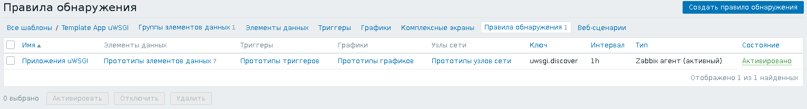
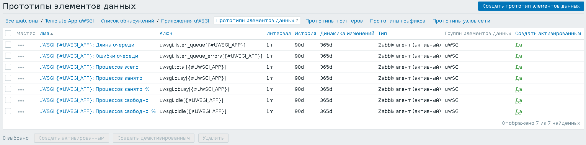
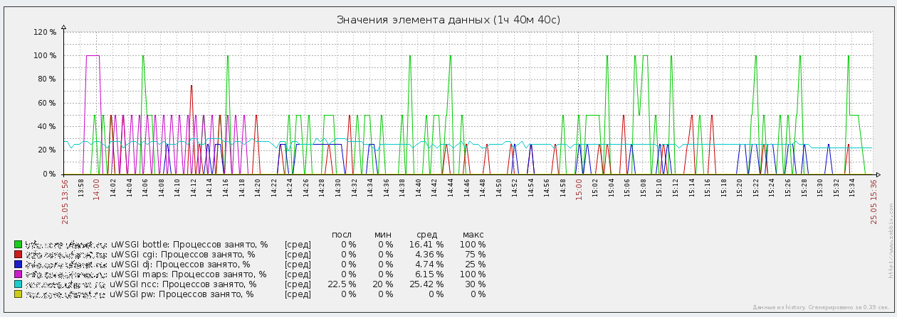

Задумался как-то о том, чтобы подобрать подходящее количество рабочих процессов для каждого из приложений, работающих под управлением uwsgi. Если рабочих процессов не хватает, то приложение работает не в полную силу и часть поступающих запросов встаёт в очередь до освобождения рабочего процесса. Если же процессов слишком много, то часть из них окажутся неиспользуемыми и будут просто занимать свободную оперативную память. Чтобы задать подходящее количество рабочих процессов, нужно понять, сколько обычно их используется в действительности.
В uwsgi новых версий есть множество разных способов контролировать его работу, но в имеющейся у меня версии 1.2.3 из репозитория Debian Wheezy поддерживается не так-то много вариантов для его контроля. Я остановился на варианте с механизмом Stats Server.
Чтобы включить Stats Server для каждого из приложений, нужно добавить соответствующую опцию в конфигурацию каждого из приложений в файлах /etc/uwsgi/apps-available/. Однако, чтобы не редактировать много файлов конфигурации, можно изменить файл с настройками по умолчанию. Копируем из файла /usr/share/uwsgi/conf/default.ini настройки в файл /etc/uwsgi/uwsgi.ini и добавляем опцию:
stats = /run/uwsgi/%(deb-confnamespace)/%(deb-confname)/stats
В результате у меня получился файл с таким содержимым:
[uwsgi] autoload = true master = true workers = 2 no-orphans = true pidfile = /run/uwsgi/%(deb-confnamespace)/%(deb-confname)/pid socket = /run/uwsgi/%(deb-confnamespace)/%(deb-confname)/socket stats = /run/uwsgi/%(deb-confnamespace)/%(deb-confname)/stats chmod-socket = 660 log-date = true uid = www-data gid = www-data
Теперь пропишем использование этого файла с настройками по умолчанию в файле /etc/default/uwsgi, прописав в него соответствующую настройку:
INHERITED_CONFIG=/etc/uwsgi/uwsgi.ini
Теперь нужно перезапустить все приложения:
# /etc/init.d/uwsgi restart
В каталогах приложений /var/run/uwsgi/app/<приложение>/ должны появиться файлы stats.
К сожалению, права доступа к этому файлу точно такие же, как у файла сокета и поменять их через файл конфигурации приложения нельзя, поэтому для доступа к файлу статистики от имени пользователя zabbix придётся либо воспользоваться sudo, либо включить пользователя zabbix в группу www-data. Я воспользовался sudo. Однако, прежде чем перейти к настройкам sudo и Zabbix-агента, нужно написать скрипт, с помощью которого Zabbix-агент будет извлекать необходимые данные из сокетов статистики.
У меня получился скрипт на языке Python со следующим содержимым:
#!/usr/bin/python
import sys, os, socket, json
def discover():
data = []
for app in os.listdir('/run/uwsgi/app/'):
data.append({'{#UWSGI_APP}': app})
data = {'data': data}
return json.dumps(data)
def read_stats(unix_socket):
s = socket.socket(socket.AF_UNIX, socket.SOCK_STREAM)
try:
s.connect(unix_socket)
except socket.error:
return None
data = ''
while True:
buf = s.recv(4096)
if len(buf) < 1:
break
data += buf
s.close()
data = data.decode('UTF-8')
return json.loads(data)
def analyze_stats(data):
listen_queue = data['listen_queue']
listen_queue_errors = data['listen_queue_errors']
total = 0
idle = 0
busy = 0
for worker in data['workers']:
total += 1
if worker['status'] == 'idle':
idle += 1
elif worker['status'] == 'busy':
busy += 1
pidle = idle * 100.0 / total
pbusy = busy * 100.0 / total
return listen_queue, listen_queue_errors, total, idle, busy, pidle, pbusy
if __name__ == '__main__':
if len(sys.argv) == 2:
if sys.argv[1] == 'discover':
print discover()
elif len(sys.argv) == 3:
app = sys.argv[2]
data = read_stats('/run/uwsgi/app/%s/stats' % app)
if data is None:
print 'No stats'
sys.exit()
listen_queue, listen_queue_errors, total, idle, busy, pidle, pbusy = analyze_stats(data)
if sys.argv[1] == 'listen_queue':
print listen_queue
elif sys.argv[1] == 'listen_queue_errors':
print listen_queue_errors
elif sys.argv[1] == 'total':
print total
elif sys.argv[1] == 'idle':
print idle
elif sys.argv[1] == 'busy':
print busy
elif sys.argv[1] == 'pidle':
print pidle
elif sys.argv[1] == 'pbusy':
print pbusy
Я поместил этот скрипт в файл /etc/zabbix/uwsgi.py. Не забудьте поменять права доступа к файлу:
# chown root:root /etc/zabbix/uwsgi.py # chmod ugo=rx /etc/zabbix/uwsgi.py
Теперь дадим пользователю zabbix права на запуск этого скрипта от имени пользователя root. Запускаем visudo и добавляем в файл конфигурации две строчки:
Defaults:zabbix !requiretty zabbix ALL=(www-data:ALL) NOPASSWD:/etc/zabbix/uwsgi.py *
Отредактируем файл конфигурации Zabbix-агента /etc/zabbix/zabbix_agentd.conf:
UserParameter=uwsgi.discover,/usr/bin/sudo -u www-data /etc/zabbix/uwsgi.py discover UserParameter=uwsgi.total[*],/usr/bin/sudo -u www-data /etc/zabbix/uwsgi.py total $1 UserParameter=uwsgi.idle[*],/usr/bin/sudo -u www-data /etc/zabbix/uwsgi.py idle $1 UserParameter=uwsgi.busy[*],/usr/bin/sudo -u www-data /etc/zabbix/uwsgi.py busy $1 UserParameter=uwsgi.pidle[*],/usr/bin/sudo -u www-data /etc/zabbix/uwsgi.py pidle $1 UserParameter=uwsgi.pbusy[*],/usr/bin/sudo -u www-data /etc/zabbix/uwsgi.py pbusy $1 UserParameter=uwsgi.listen_queue[*],/usr/bin/sudo -u www-data /etc/zabbix/uwsgi.py listen_queue $1 UserParameter=uwsgi.listen_queue_errors[*],/usr/bin/sudo -u www-data /etc/zabbix/uwsgi.py listen_queue_errors $1
И перезапустим Zabbix-агента, чтобы новые настройки вступили в силу:
# /etc/init.d/zabbix-agentd restart
Я подготовил два шаблона для Zabbix 3.4:
В обоих шаблонах имеется элемент данных для низкоуровневого обнаружения, который находит все имеющиеся сокет-файлы для статистики приложений. Обнаружение происходит раз в час:
Есть прототипы элементов данных, с помощью которых контролируется: длина очереди, количество ошибок в очереди, общее количество процессов приложения, количество занятых процессов, количество свободных процессов, процент занятых процессов и процент свободных процессов. Значения этих данных для каждого из приложений снимаются раз в минуту:
Приведу пример графика с реального сервера:
Из графиков видно, что приложения maps и bottle иногда используют 100% рабочих процессов, а вот приложение ncc постоянно использует не более 30% рабочих процессов.